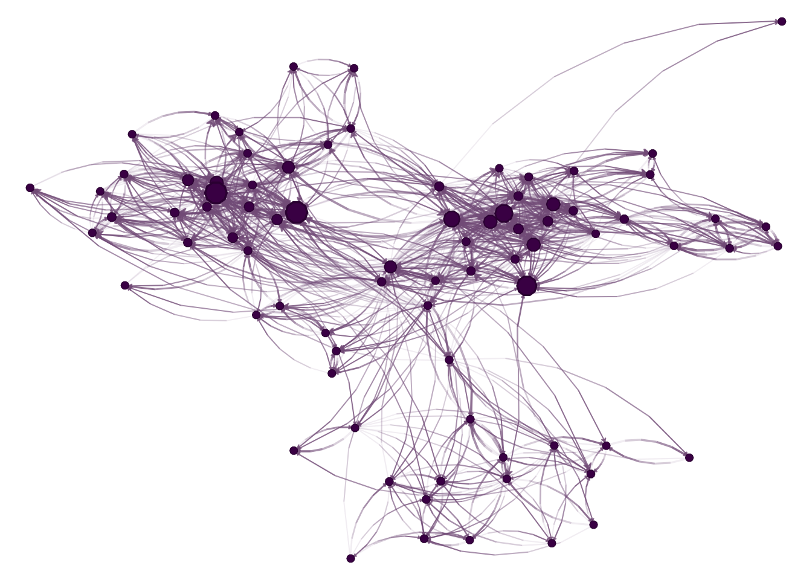
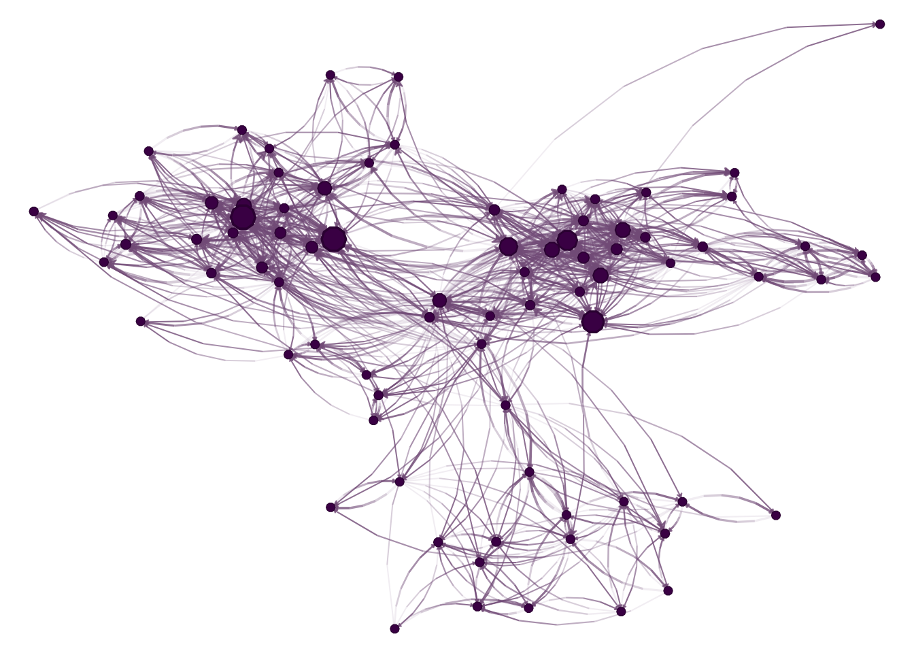
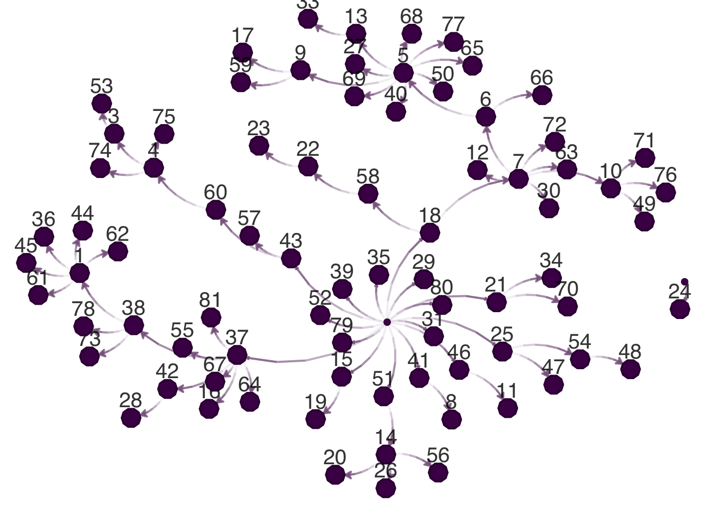

Code

Group age
1 3 34
2 1 47
3 3 56
4 3 42
5 2 63
6 2 65 [,1] [,2]
[1,] 57 52
[2,] 76 42
[3,] 12 69
[4,] 43 34
[5,] 28 47
[6,] 58 51epiworldR also supports diffusion networks to simulate the spread of ideas or rumors throughout a population. The below example demonstrates this capability.
Goal: Create a diffusion network model that simulates a rumor’s spread throughout the UKfaculty network of size n = 81. We start by loading the corresponding R packages and data.
We now load the UKfaculty data and visualize the network. The file part2a.rda has the network, the vertex attributes as a numeric matrix, and the edge list as a numeric matrix.

Group age
1 3 34
2 1 47
3 3 56
4 3 42
5 2 63
6 2 65 [,1] [,2]
[1,] 57 52
[2,] 76 42
[3,] 12 69
[4,] 43 34
[5,] 28 47
[6,] 58 51To simulate the rumor, we use the ModelDiffNet function:
# Creating the diffusion model
library(epiworldR)
adopt_rumor <- ModelDiffNet(
name = "The dean is leaving!",
prevalence = 2/vcount(UKfaculty), # Two adopter
prob_adopt = .1,
data = UKfaculty_vertex,
params = c(0, 5)
)
# Reading in the network
agents_from_edgelist(
adopt_rumor,
size = vcount(UKfaculty),
source = UKfaculty_edgelist[,1] - 1L,
target = UKfaculty_edgelist[,2] - 1L,
directed = TRUE
)
# Running the model for 50 steps
run(adopt_rumor, 100);adopt_rumor_________________________________________________________________________
Running the model...
||||||||||||||||||||||||||||||||||||||||||||||||||||||||||||||||||||||||| done.
done.________________________________________________________________________________
Diffusion of Innovations - The dean is leaving!
It features 81 agents, 1 virus(es), and 0 tool(s).
The model has 2 states.
The final distribution is: 0 Non adopters, and 81 Adopters.
We can extract the adoption network:
Warning in get_transmissions.epiworld_diffnet(adopt_rumor): The transmission
network is not necesarily relevant for the diffnet model